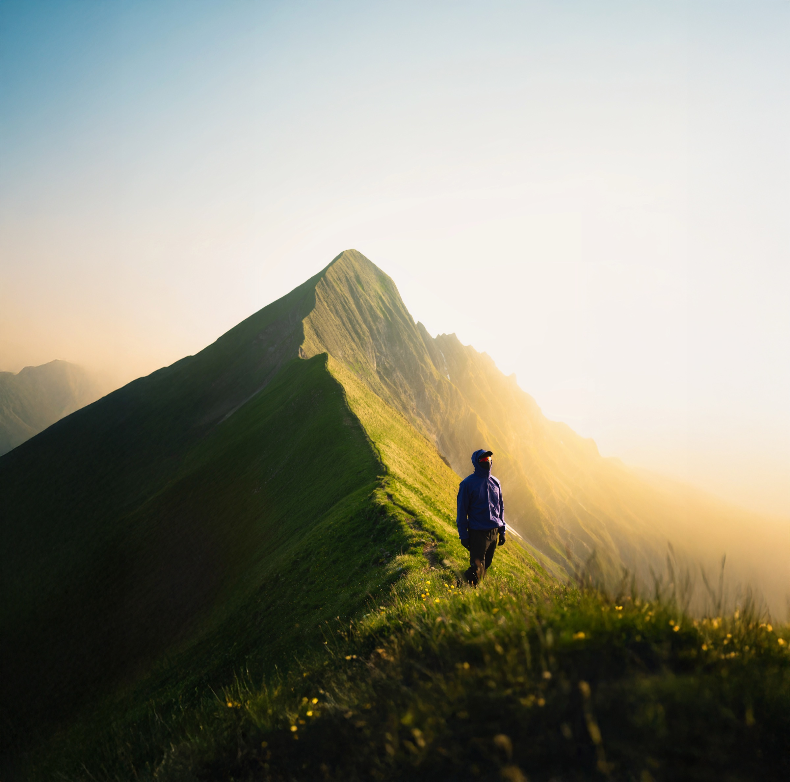
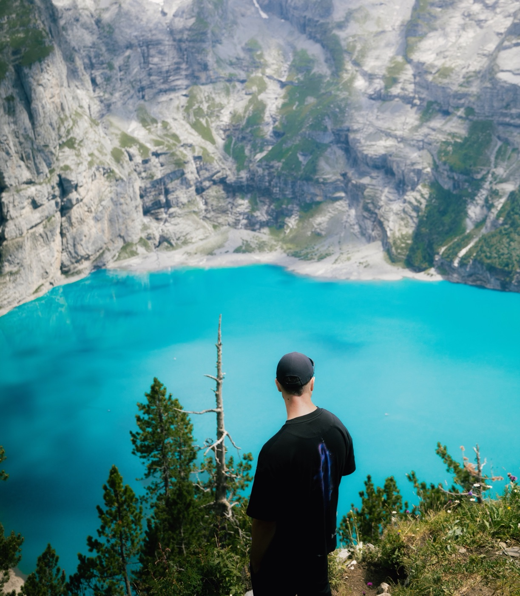
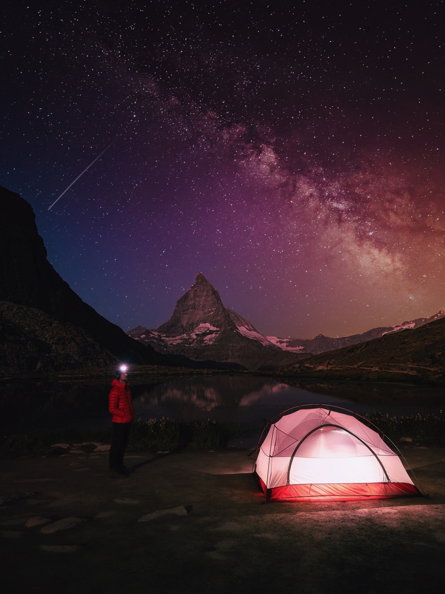
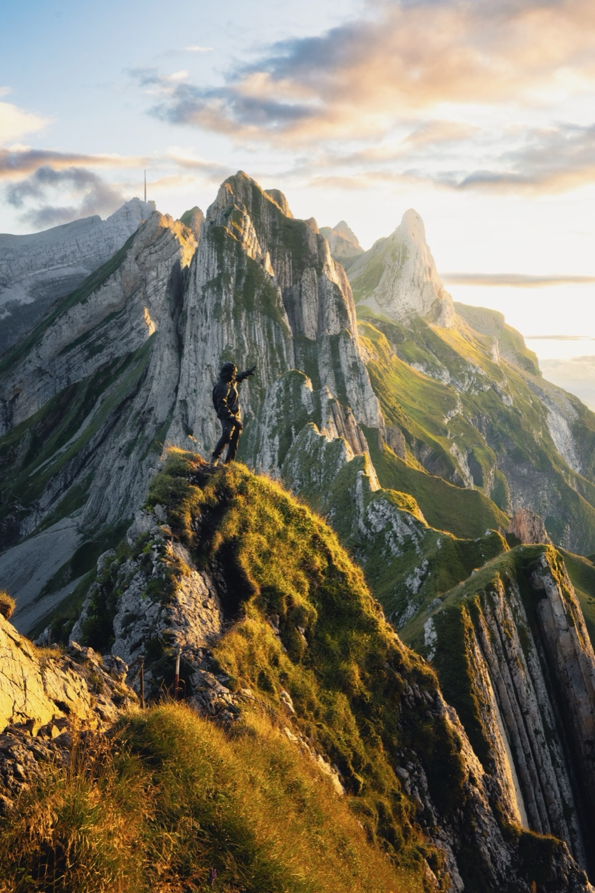
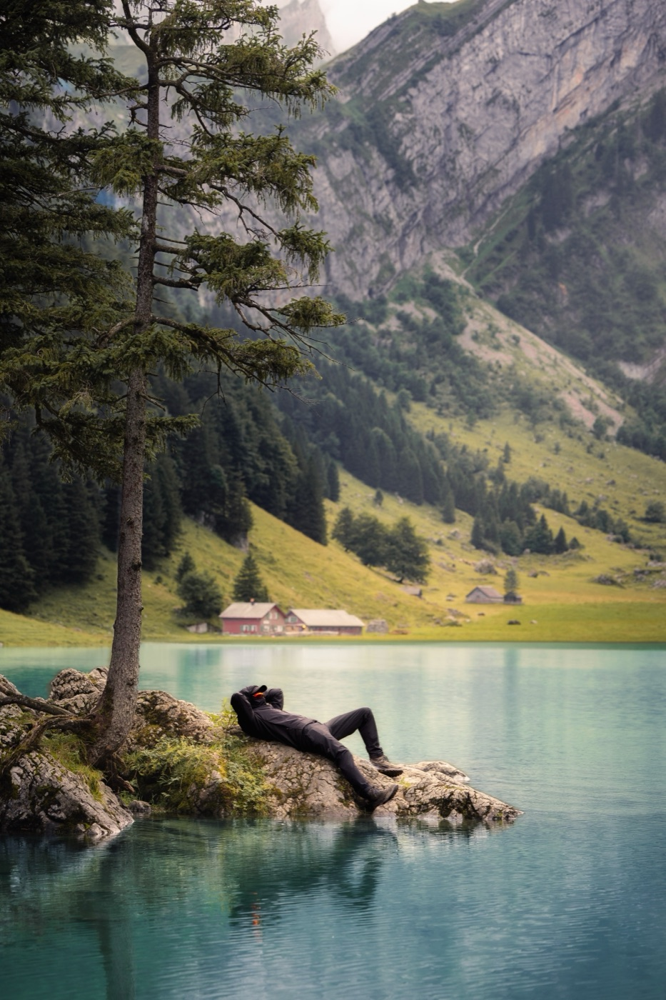
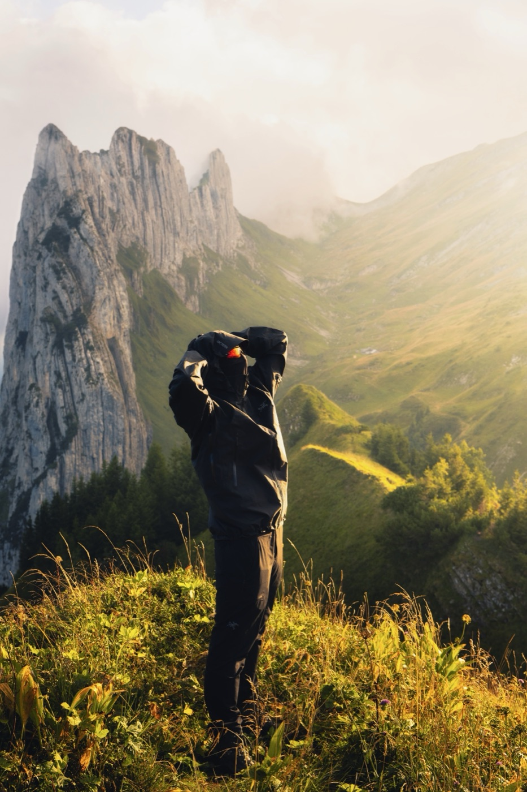
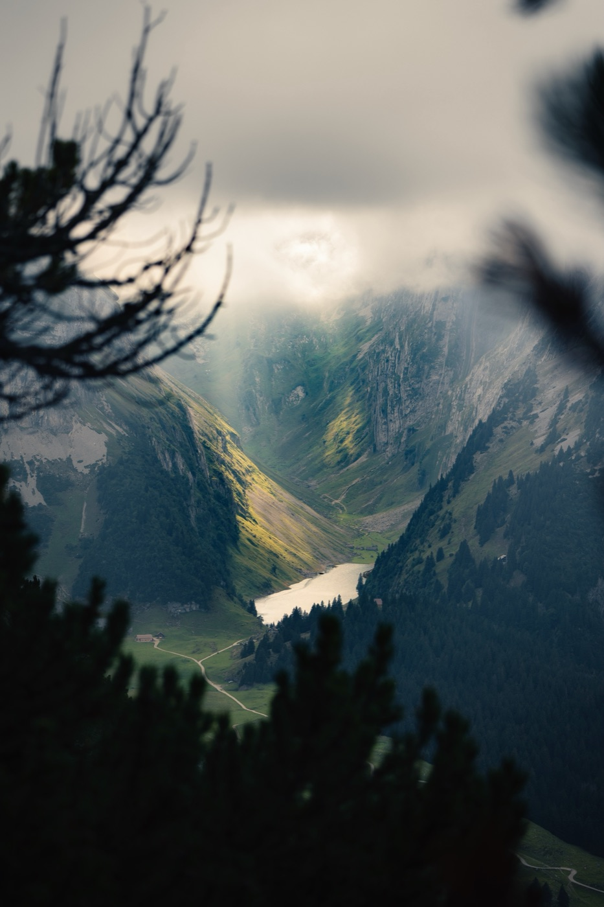

141 hidden spots in the Swiss Alps.
GPS, routes, recommended light, wildcamping legality. PDF plus interactive map.
The famous gems. Six of the 141 you have probably seen.
These six are not the hidden ones. They are the postcards. The other 135 are deeper in, off the main routes, and only inside the guide.

Oeschinensee
The turquoise above Kandersteg. Walk past the platform and it gets quiet fast.

Riffelsee
The Matterhorn, doubled. Be in position before sunrise. Five minutes of red on the tip.

Schäfler
Two hours from Ebenalp to a ridge with a chalet. Book ahead, stay the night.

Seealpsee
Glassy water below Säntis. Rent a boat for five francs and shoot from the middle.

Saxer Lücke
A notch between two peaks. Sunset comes through the gap and lights everything.

Fälensee
Saxer Lücke gets the crowd. Drop below it and find a ribbon of water with nobody around.
135 more spots are off the main routes and only inside the guide. See what's in the guide ›
Four answers worth getting right.
Hikebeast is built around four topics. Each one is what someone Googles before a trip. Here is what the guide covers, in one click each.

I'm Leon. I have spent five years finding spots in the Swiss Alps that don't show up on the tourist map.
Some are famous, like the six above. Most are not. If a spot is in the guide, I have been there. I have photographed it. I know where to park, when the light is right, and whether you can sleep there for one night without a problem.
I publish on Instagram and TikTok as @leon.helg. The guide is the long-form version of what I share there, with everything I would tell a friend if they were coming to visit.
Common questions, direct answers.
What's in the guide?
- Exact GPS for the spot and the parking
- Walking time, difficulty, route notes
- Best time of day and best season for photography
- Wildcamping legal status with reference
- Photos from the spot at the right light
Is wildcamping legal in Switzerland?
How are the spots picked?
How long does the walk take to reach a typical spot?
What's the best month to hike the Swiss Alps?
Who is Leon Helg?
What does it cost?
Get the Swiss Gems guide
141 spots, GPS, photo timing, wildcamping legality. One-time CHF 27.
Sources
- Swiss Alpine Club, "Camping and bivouacking in the Alps". sac-cas.ch. ↩
- Swiss National Park, 170.3 km² in canton Graubünden. nationalpark.ch. ↩
- Federal Office for the Environment (BAFU), 43 federal hunting reserves (Eidgenössische Jagdbanngebiete). bafu.admin.ch. ↩
- Swiss Alpine Club, hut directory and opening schedule. sac-cas.ch. ↩
- Graubünden Tourism, Larch Tracker. graubuenden.ch. ↩